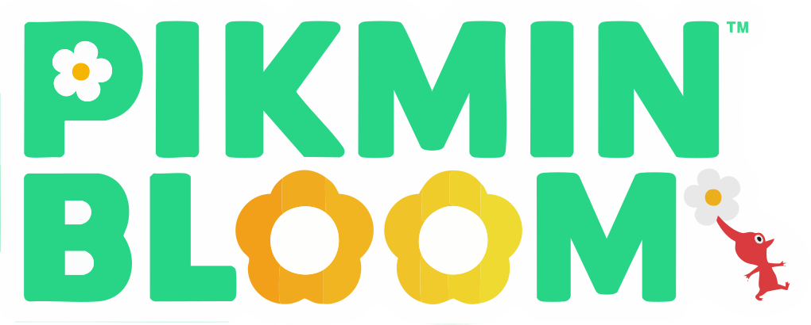

Main Navigation
Choose your Pikmin!
Use your mouse to hover / click to discover more about each Pikmin Bloom characters.

Use your mouse to hover / click to discover more about each Pikmin Bloom characters.
Scientific name - Pikminidae rubrus
Red Pikmin have pointy noses and white flowers, and are present in all Pikmin games. They are resistant to fire and their attack strength is 1.5x stronger than most other types, making them good at combat. They are the first type discovered in all Pikmin games.
Scientific name - Pikminidae caerula
Blue Pikmin have mouthlike gills and white flowers, and are present in all Pikmin games. They are resistant to water, making them the only type able to access submerged portions of areas where other Pikmin would drown. They are the last type discovered in most games with a linear discovery order, the exceptions being Hey! Pikmin, Pikmin Bloom and Pikmin 4.
Scientific name - Pikminidae auribus
Yellow Pikmin have large ears and white flowers, and are present in all Pikmin games. They can be thrown higher than other types, but their other unique abilities vary by game. In Pikmin, they are the only type that can carry Bomb Rocks. In Pikmin 2, Pikmin 3, Pikmin 4 and Hey! Pikmin, they are resistant to electricity. They can also conduct electricity.
Scientific name - Pikminidae volarosa
Winged Pikmin are pink and have wings, large blue eyes, and lavender-purple flowers. They are present in Pikmin 3, Pikmin 4, Hey! Pikmin, and Pikmin Bloom. They can fly over water and low barriers, allowing them to take shortcuts when carrying, as well as making it harder for enemies to attack them, but their attack strength is lower than other Pikmin types.
Scientific name - Pikminidae yokozunum
Purple Pikmin have short hairs, magenta flowers, and are bulkier than other Pikmin types. They are present in Pikmin 2, Pikmin 4 and Pikmin Bloom, as well as the alternative game modes of Pikmin 3. They weigh 10 times as much as other Pikmin types, are slower than other types, can carry 10 times the weight of other types, and can attack with a strong pound capable of stunning enemies. In all games except Pikmin 4, they do not have an Onion and must be gained by using Candypop Buds.
Scientific name - Pikminidae habisaxum
Rock Pikmin are parasitic Pikmin inhabiting rocks and have lavender-purple flowers. They are present in Pikmin 3, Pikmin 4, Hey! Pikmin, and Pikmin Bloom. Their hardness allows them to destroy crystal obstacles, attack enemies through a powerful direct impact, and be resistant to being crushed or stabbed.